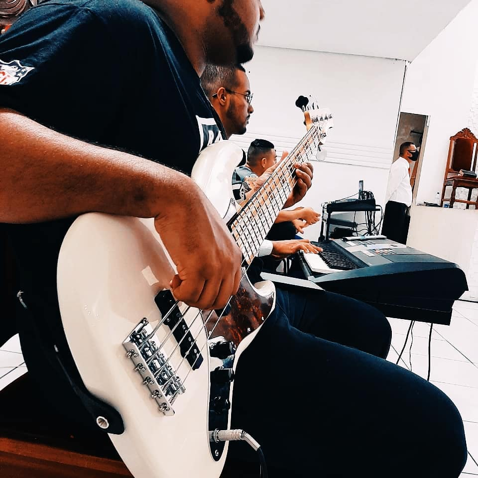
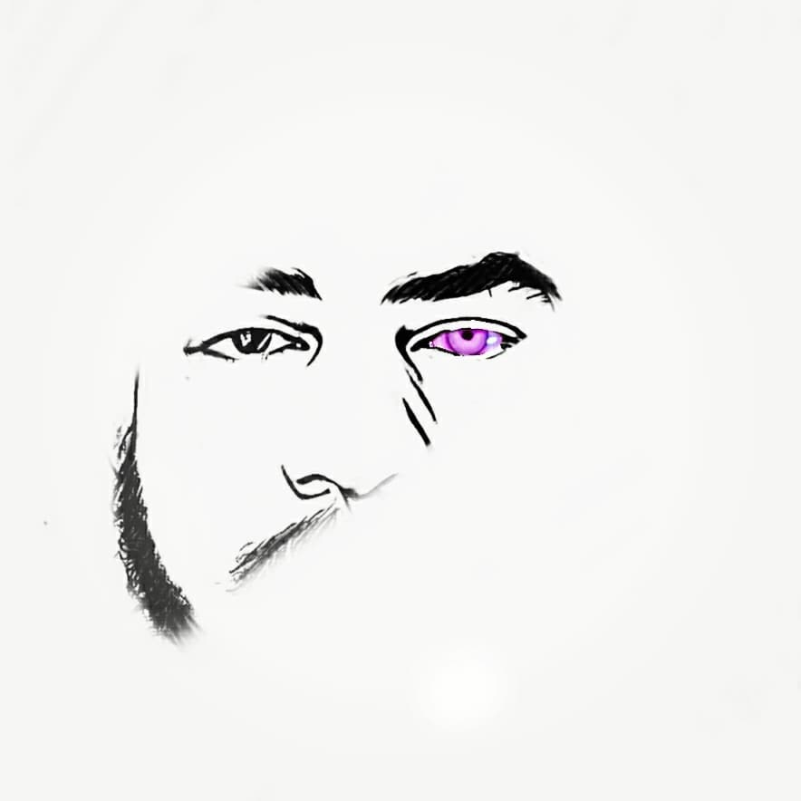

O que eu faço para me divertir?
Uma da coisa que faço para me divertir e estudar Musica, a musica para mim, e de grande importancia, ja que ela me alxiliou na superação de uma faze dificil da minha vida, atualmente eu estudo contra baixo e teclado, mas no futuo pretendo aprender outros instrumentos, nos momento em que, nao estou estudando musica, gosto muito de desenhar,ver um seria e jogar video game, ou so ficar procrastinando no youtube.


